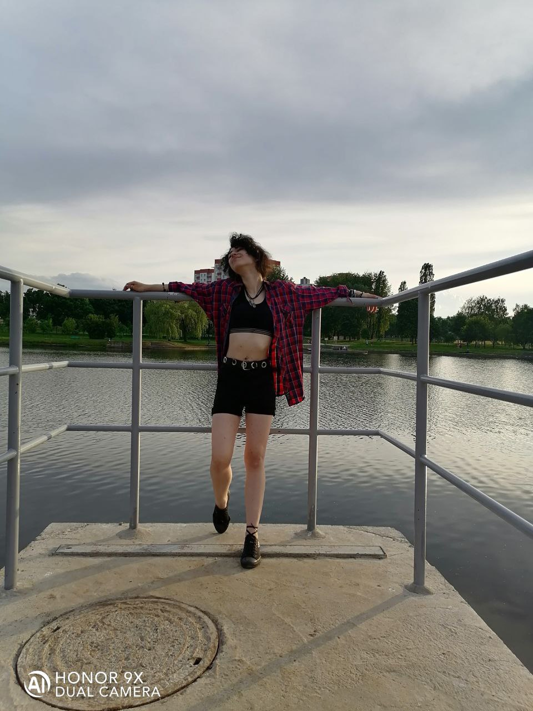
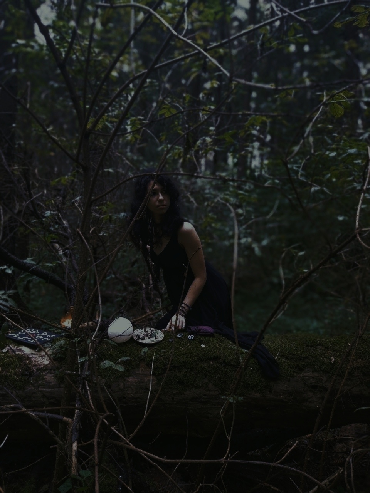
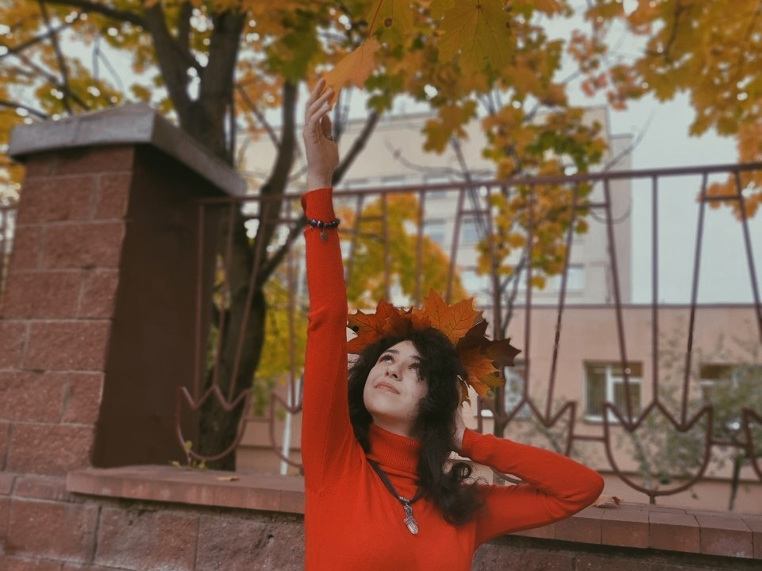

Карина из Могилева, играет на гитаре, делает украшения и декор для дома, пишет рассказы и иногда стихи, фоткает всё, что вижу, ещё она фанат селфи.
Карина Бурачевская



Полным именем Карину называют только мама, а так всегда сокращают как Рина либо Рена, с 2017 года носит разные линзы, любит придумывать дизайны комнат, в основном в симс, иногда в скетчбуке.
В школе холила на Что?Где?Когда? и на олимпиады по языкам, еще 11 лет ходила в театралку, иногда подрабатывает тем, что снимается где-нибудь в массовке.


Любит ходить на концерты, фоткаться в разных образах, много читает, тискает всех котов, которых видит.
Терпеть не может готовить, но обожает печь вкусняшки, делает травяные чаи и учит этому сестру, гадает на таро, делает обереги, отмечает все 8 праздников кельтского колеса года.
